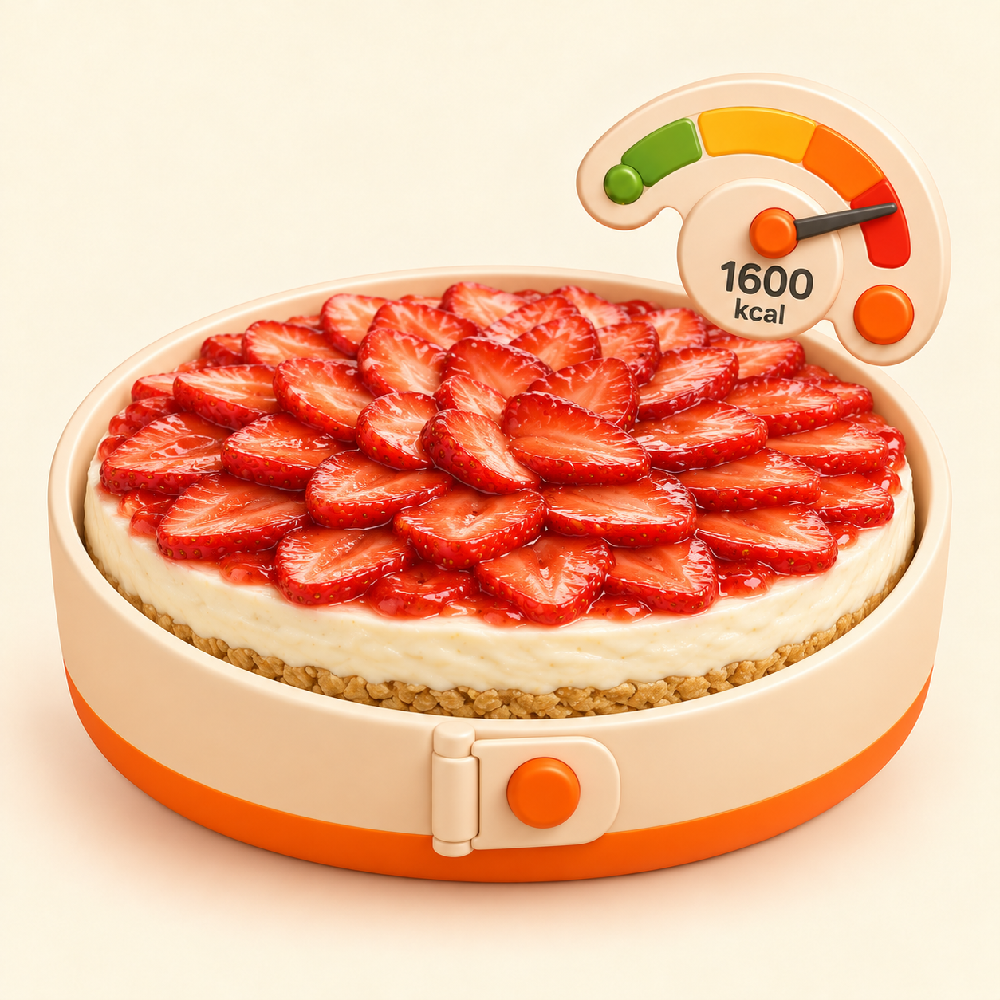
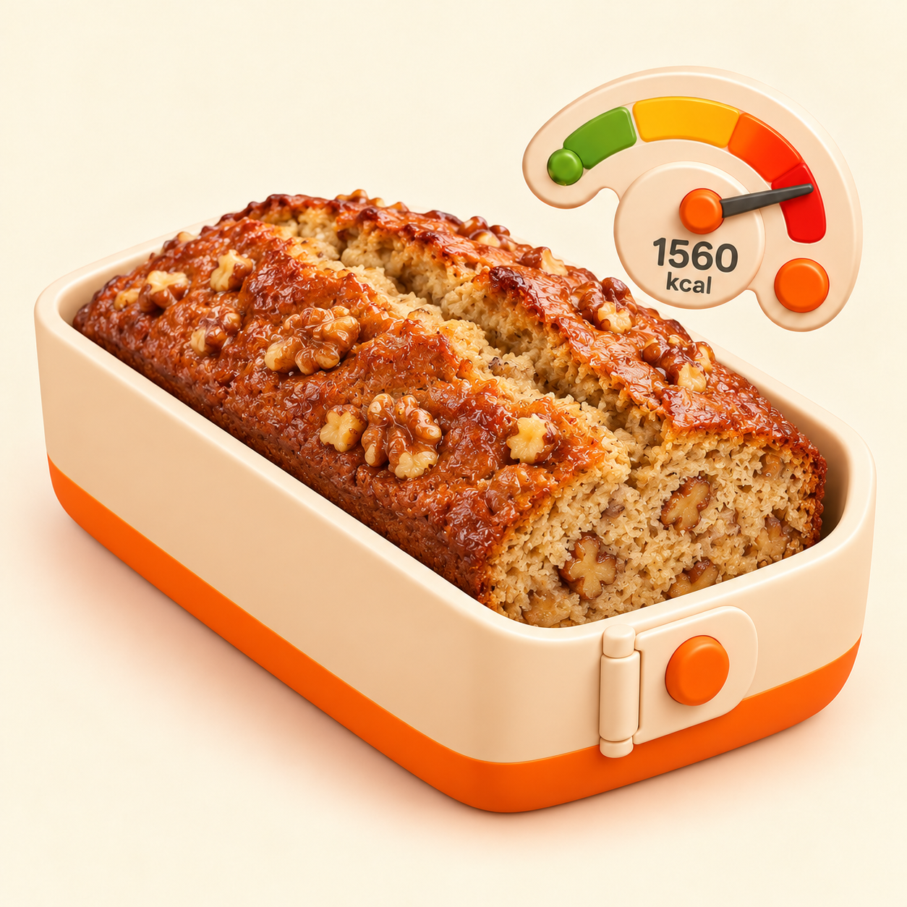

Reference FROZEN do08VESSEL_DESSERT_MOLD


1254 × 1254 · 1.453.298 byte · SHA-256 b75964e4da7c9e0a1f8383003aafcfcdf19e44b43b486312cbc60512958e3927
Un solo banana bread in stampo plumcake; noci integrate; gauge esatto e bloccato al massimo rosso; nessun testo o UI estranei.